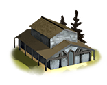
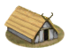

RTR: Imperium Surrectum
RTR: Imperium SurrectumWhat is already built
| Building chain | Level | Building chain | Level | Building chain | Level | Building chain | Level | ||||
|---|---|---|---|---|---|---|---|---|---|---|---|
 | Government (governor) | Governor's House |  | Government (dependency) | Dependency | Highland Pastoralism (husbandry) | Slope Pasturing (Husbandry) | Region Information | Region Information Scroll | ||
| Lumber Industry | Lumber Camp (Rural) |
What can be recruited here
Nothing can be raised here at the campaign start.
3 more units once the building is up — greyed out, with what each needs.
| Unit | Once you have | Cost | Upkeep | Unit | Once you have | Cost | Upkeep | |||||||
|---|---|---|---|---|---|---|---|---|---|---|---|---|---|---|
| Ballistas | Armourer (Industry), Foundry (Industry) | 1,797 | 658 | Lithoboloi | Armourer (Industry), Foundry (Industry) | 2,592 | 949 |
| Unit | Once you have | Cost | Upkeep | |||||||||||
|---|---|---|---|---|---|---|---|---|---|---|---|---|---|---|
| Large Lithoboloi | Foundry (Industry) | 3,132 | 1,146 |